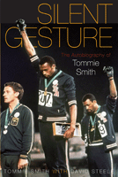

<body bgcolor="#FFFFFF" text="#000000" link="#0000FF" vlink="#CC0000" alink="#CC0000"><center><hr width="350" size="1" align="center" noshade>The story of the most famous protest in sports history, written by one of the men who staged it.<hr width="350" size="1" align="center" noshade><p><a href="https://cdcshoppingcart.uchicago.edu/Cart/ChicagoBook.aspx?ISBN=9781592136391&&PRESS=temple" target="_top">Buy this book!</a> | <a href="https://cdcshoppingcart.uchicago.edu/Cart/Cart.aspx?PRESS=temple" target="_top">View Cart</a> | <a href="https://cdcshoppingcart.uchicago.edu/Cart/Cart.aspx?PRESS=temple" target="_top">Check Out</a></p><p></p></center><!--none//--><h1>Silent Gesture</h1>
<H2>The Autobiography of Tommie Smith</H2>
<h3>Tommie Smith with David Steele </h3>
<P>cloth 1592136397 $70.50, Jan 07, <FONT COLOR=#990033>Available</FONT>
<br>paper 1592136400 $26.95, <FONT COLOR=#990033>Available</FONT>
<br>Electronic Book 1592136419 $26.95 <FONT COLOR=#990033>Available</FONT>
<BR> 288 pp
6x9
16&nbsp;halftones
</P><h3 align="center"><P><font color="#996633">Author Tommie Smith received the Arthur Ashe Courage Award at the ESPYs,
2008</font></P>
<P><font color="#996633">Named one of two �Adult Nonfiction Honor Books� by The Black Caucus of the American Library Association (BCALA).,
2008</font></P>
<P><font color="#996633">Nominated for an NAACP Image Award in the category �Outstanding Literary Work � Biography/Autobiography�,
2008</font></P>
</H3>
<BLOCKQUOTE><I><I>"This is a book about principle, commitment, belief; and consequences. And the consequences of consequences. </i>Tommie Smith<i> says his gesture was done in the name of human rights, and in these pages, he offers himself up, in the fullest-the complexity, the scars, the pain, and the affirmation of his own humanity. Should there ever be an appointed time, would that I might show half the commitment and courage. Bravissimo!" </i><br><b>&#151</i>Delroy Lindo</b></I></BLOCKQUOTE>
<p>At the 1968 Olympics in Mexico City, Tommie Smith and his teammate John Carlos came in first and third, respectively, in the 200-meter dash. As they received their medals, each man raised a black-gloved fist, creating an image that will always stand as an iconic representation of the complicated conflations of race, politics, and sports. In this, his autobiography, Smith fills out the story around that moment--how it came to be and where it led him.
<p>Smith engagingly describes his life-long commitment to athletics, education, and human rights. He also dispels some of the myths surrounding his famous gesture of protest: contrary to legend, Smith was not a member of the Black Panthers, nor were his medals taken back by the Olympic Committee. Retelling the fear he felt in planning and carrying out his protest, the death threats against him, his difficulty in finding work, and his determination to live his values, he conveys the long, painful backlash that came with his fame, and his fate, all of which was wrapped up in his "silent gesture."
<BR>&nbsp;<h2>Excerpt</h2><P>Excerpt available at <a href="http://www.temple.edu/tempress">www.temple.edu/tempress</a></p>
<BR>&nbsp;<h2>Reviews</h2>
<p><I>"In a season of discontent and tragedy, at a time when there was so little reason for hopefulness, </i>Tommie Smith<i> refused to be cowed. Risking nothing less than their futures, he and </i>John Carlos<i> made a statement that could not be ignored. Finally, Smith tells us his story, a story as significant as any ever told by an athlete. </i>Silent Gesture<i> will be invaluable to anyone who hopes to understand a turbulent time and an act of true courage."</i><br><b>&#151Jeremy Schaap</b>, author of <i>Triumph: The Untold Story of Jesse Owens and Hitler's Olympics and Cinderella Man: James J. Braddock, Max Baer, and the Greatest Upset in Boxing History</i>
<p><I>"Smith is an important figure in the history of American sports, and deserves a forum to tell his story his way."</I>
<br>&#151<b><I>Booklist</I></b>
<p><I>"[A]n important entry in the history of track and field and African American studies."</I>
<br>&#151<b><I>Library Journal</I></b>
<p><I>"[T]he book offers insights into Smith's athletic prowess....When he describes the physical sensations of running -- the paradoxical relaxation of muscles required to explode out of the blocks, the adrenaline that floods the body as a sprinter takes the get-set position and the stride-by-stride account of the 1968 gold medal race -- Smith's narrative surges to life. A major aim of the book is to explain the motivation behind the silent gesture, but Smith isn't interested in trenchant political analysis...Readers of </i>�Silent Gesture�<i> will be left with a stark impression of the toll Smith paid for speaking out against racism. He views his autobiography as his last, desperate chance to pull himself out of the �muck and mire [he's] been stuck in since the Mexico City Olympics.� Smith never expresses regret for having taken his controversial stand."</I>
<br>&#151<b><I>The Washington Post</I></b>
<p><I>"Smith�s account is told in simple but eloquent fashion, tempered by a healthy dose of irony and humor. He never romanticizes his actions, but rightfully acknowledges their powerful social impact. (4 out of 5 stars)."</I>
<br>&#151<b><I>Smooth</I></b>
<p><I>"[H]is experiences at the Olympics [are] described so vividly that readers will feel as if they're witnessing it unfold themselves...Smith's candid
reflections on life after Mexico City is compelling. Most striking, though,
are revelations about the stresses he endured before the 1968 race. For Smith, at 24, to have not only won the gold, but to have issued his
anything-but-silent gesture from the world's biggest stage, makes his story all the more extraordinary."
</I><br>&#151<b><I>Black Issues Book Review</I></b>
<p><I>�With the help of Steele, Smith offers a well-documented and clearly written story behind the memorable 1968 Olympic moment�Extensive background information about Smith�s life before, during and after the �silent gesture� provides understanding and insight about an Olympic image that will endure forever. Clearly presenting the fears, the disappointments, the triumphs, and the hopes, then and now, that the raised black fists represented in 1968, this book offers a wealth of information that will help the reader understand the deep-rooted meaning of the gesture and the impact it continues to have almost 40 years later. Recommended.�
</I><br>&#151<b><I>Choice</I></b>
<p><I>�What is the worth of this book? I believe it to be one that accurately portrays Tommie Smith�s life and Olympic ordeal�.We have waited a long time for this book. The result is worth the delay�.</i>Silent Gesture<i> provides, by far, the most powerful punctuation mark in explaining one of the most historic of all Olympic moments.�</I><br>&#151<b><I>Olympika: The International Journal of Olympic Studies</I></b>
<p><I>"Smith�s stories of his ostracized life post-1968 Olympics offer historians another opportunity to consider the multiple ways memory shapes the popular narrative.... Smith uses his book as an opportunity to tell his truth...[which is] engaging."</I>
<br>&#151<b><I>The Journal of Sport History</I></b>
<BR>&nbsp;<h2>Contents</h2><P>
Foreword
<p>
1: Welcome Home - 1
<br>
2: October 16, 1968 - 26
<br>
3: Out of the Fields - 55
<br>
4: The Biggest City I've Ever Seen - 95
<br>
5: Run Before You Walk - 123
<br>
6: The Coach and the Professor - 147
<br>
7: Linked Forever - 147
<br>
8: No Gold, No Glove - 190
<br>
9: Paying the Price - 220
<br>
10: Going Underground - 247
<br>
11: Families Lost, and Found - 268
<br>
12: It Will Outlive Me - 296
<br>
Epilogue: Silent and Eternal - 324
<br>
Acknowledgements
<br>
About the Authors
</P><BR>&nbsp;<H2>About the Author(s)</H2>
<table><tr><td valign="top"><img src="/tempress/authors/1916_au1.gif" height="90" width="75"></td><td width="100%" valign="middle"><p><b>Dr. Tommie Smith</b> is the only man in track-and-field history to hold 11 world records simultaneously, and the first man in Olympic Games history to win a gold medal in record-breaking time in the 200-meter, under 20 seconds. He has been an educator and a track-and-field coach for 40 years.</P></td></tr></table><table><tr><td valign="top"><img src="/tempress/authors/1916_au2.gif" height="90" width="75"></td><td width="100%" valign="middle"><p><b>David Steele</b> is a writer for the Fanhouse/AOL Sports website (<a href="http://www.fanhouse.com" target="new">www.fanhouse.com</a>). He has been a columnist for <i>The Baltimore Sun</i> and the <i>San Francisco Chronicle</i> and has spent more than 20 years in sports journalism. In 2009, he received a Lifetime Achievement Award from Baltimore�s Association of Black Media Workers.</P></td></tr></table>
<BR><H2>Subject Categories</H2>
<p><A HREF="/tempress/biography.html" TARGET="_top">Biography/Memoir/Autobiography</a>
<BR><A HREF="/tempress/sports.html" TARGET="_top">Sports</a>
<BR><A HREF="/tempress/african.html" TARGET="_top">African American Studies</a>
</p>
<BR><h2 class="inpageheading">In the series</H2>
<P><I><a href="http://www.temple.edu/tempress/sporting.html" onMouseOver="window.status='Click for other books in this series!'; return true;" onMouseOut="window.status=''; return true;" target="_top">Sporting</a></i>, edited by Amy Bass.
</p><p>As an international cultural activity for athleticism, spectatorship, and global cultural exchange, sport is unmatched by any other force on earth. And yet it remains a consistently understudied dimension of history and cultural studies. <i>Sporting</i>, edited by Amy Bass, aims to contribute to the study of sport by publishing works by people across a range of disciplines, by professional sportswriters, and by athletes to add substance to our still emerging notion of globalization.</p>
<p align="center"><a href="https://cdcshoppingcart.uchicago.edu/Cart/ChicagoBook.aspx?ISBN=9781592136391&&PRESS=temple" target="_top">Buy this book!</a> | <a href="https://cdcshoppingcart.uchicago.edu/Cart/Cart.aspx?PRESS=temple" target="_top">View Cart</a> | <a href="https://cdcshoppingcart.uchicago.edu/Cart/Cart.aspx?PRESS=temple" target="_top">Check Out</a></p><p><font face="Arial" size="1"><a href="copyright.html" onMouseOver="window.status='Web Copyright Policy';return true;" onMouseOut="window.status=''" title="Web Copyright Policy">&copy;</a> 2015 <a href="http://www.temple.edu" target="new" onMouseOver="window.status='Link to Temple University home page';return true;" onMouseOut="window.status=''" title="Link to Temple University home page">Temple University</a>. All Rights Reserved. http://www.temple.edu/tempress/titles/1916_reg.html</font></p>